le Cube
C'est le mode de jeu par défaut, où le joueur contrôle un cube qui saute quand on clique et qui continue de sauter si on maintient le clic.
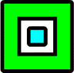
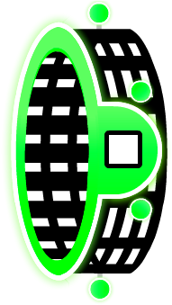
le Ship
Le mode ship est un mode de jeu où le joueur contrôle un vaisseau qui vole vers le haut quand on maintient le clic et vers le bas quand on relâche le clic.
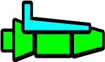
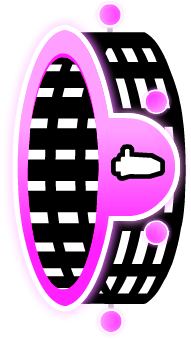
Le ship a une variante dans le mode platformer :
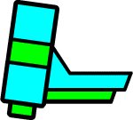
la Ball
Le mode ball est un mode de jeu où le joueur contrôle une balle qui change de gravité quand on clique.
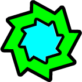
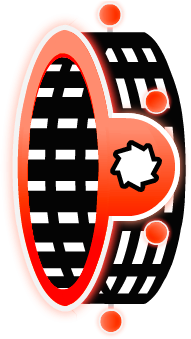
le Ufo
Le mode ufo est un mode de jeu où le joueur contrôle un ovni qui saute quand on clique (même dans les airs).
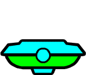
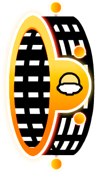
la Wave
Le mode wave est un mode de jeu où le joueur contrôle une vague qui monte en diagonale quand on maintient le clic et descend en diagonale quand on relâche le clic.
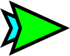
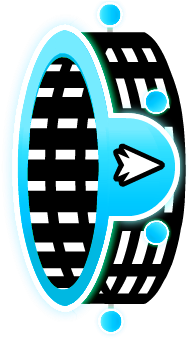
le Robot
Le mode robot est un mode de jeu où le joueur contrôle un robot qui saute plus haut quand on maintient le
clic et plus bas si on clique moins longtemps.
Ce mode ressemble beaucoup au mode cube.
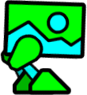
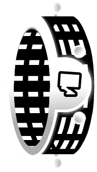
le Spider
Le mode spider est un mode de jeu où le joueur contrôle un araignée qui se téléporte au plafond quand on clique, et au sol si elle y est déjà.
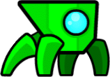
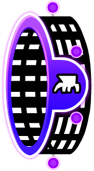
le Swing
Le mode swing est un mode de jeu où le joueur contrôle une balle qui change de gravité en volant quand on clique.
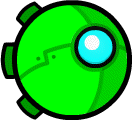
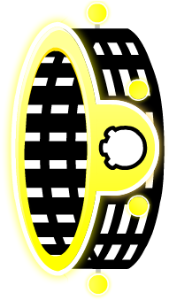
Pour en savoir plus
Autre description